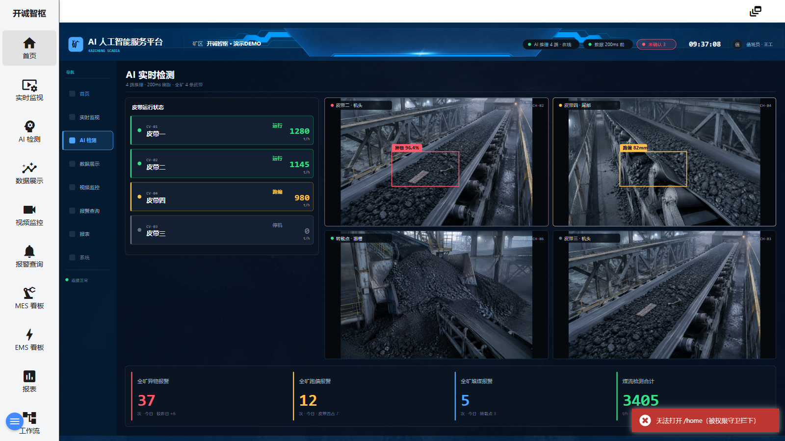

首页是开诚智枢 SCADIA 的运行态总框架：顶部细条为全局页眉（报警/信息计数、演示工程切换等），左侧为常驻导航菜单（共 11 项），主区域渲染当前工程画面。矿区演示工程的 4 个工程画面——AI 检测、数据展示、视频监控、报警查询——全部在 /home 框架内切换，不跳离页面；其余菜单项（实时监视、MES 看板、EMS 看板、报表、工作流、系统）跳转到对应功能页。画面为 1920×1080 的 SVG 组态图，会按窗口大小自适应缩放。

图 1-1 首页与工程画面（当前交付版实际截图）
| 区域 | 说明 |
|---|---|
| ① 页眉（顶部白条） | 右侧依次为：报警铃铛（bell 图标，红色角标数字为未确认报警数）、信息按钮（error 图标，角标为信息条数）、演示工程按钮（dynamic_feed 图标，点击弹出「矿区演示工程 / 出厂演示工程」菜单）。工程若配置了时钟、语言或登录，也会显示在这一条上。 |
| ② 左侧导航菜单 | 浅灰底、图标+文字块状菜单，标题「开诚智枢」。11 项：首页、实时监视、AI 检测、数据展示、视频监控、报警查询、MES 看板、EMS 看板、报表、工作流、系统。当前画面项高亮。 |
| ③ 画面标题栏（画面内绘制） | 左起：矿区徽标、「AI 人工智能服务平台」主标题与 KAICHENG SCADIA 副标题、「矿区」「开诚智枢 · 演示DEMO」徽章；右起状态区：AI 推理 4 路 · 在线、数据 200ms 前、未确认 3（未确认报警数）、实时时钟（如 07:12:36）、值班员 · 王工。时钟与值班人由工程内置脚本每秒刷新。 |
| ④ 画面内导航（画面左侧绘制） | 画面自带一列导航：首页、实时监视、AI 检测、数据展示、视频监控、报警查询、报表、系统。其中前 6 项可点击，直接切换工程画面（与左侧菜单等效）；「报表」「系统」为绘制样式，请使用左侧菜单进入。 |
| ⑤ 主画面区 | 渲染当前工程画面内容（AI 检测画面示例见图 1-1，各画面详见第 3～6 章）。 |
| ⑥ 连接状态 | 画面左下方「连接正常」指示服务端通讯状态；服务端失联时页面顶部出现红色横幅提示。 |
| ⑦ 报警面板 | 点击页眉铃铛可在主区底部展开可折叠的实时报警面板（详见第 6 章）。 |
http://127.0.0.1:1881。http://127.0.0.1:1881/home?viewName=数据展示界面（viewName 为画面名称）。.\start-scadia.ps1 重新启动；换端口用 -Port 参数。admin / 123456。